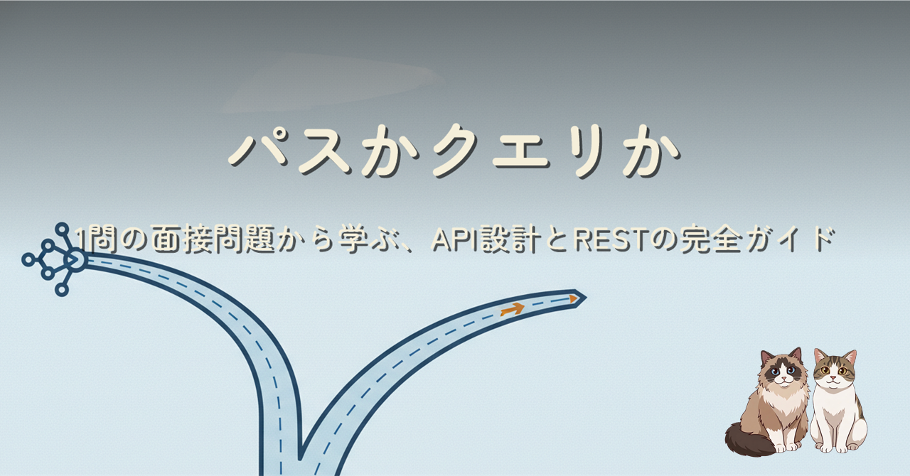
X で流れてきた1問のバックエンド面接問題「パスで分けるか、クエリで分けるか」から出発し、API の基礎・HTTP・REST・URL 設計・実務パターン・REST の限界までを 1 本で繋いだ詳細版です。結論は「パスは別リソース、クエリは同一リソースの絞り込み」。即答した時点で不正解になる理由を、前提別に場合分けして語っていきます。Zenn 側はやわらかい体験談トーン、こちら HTML 版は構造化された設計資料として読めるよう整理しました。
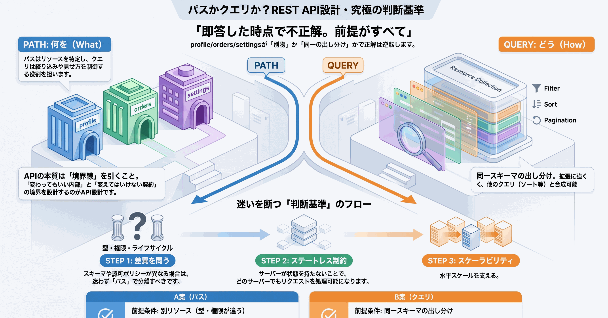
出発点はこの面接問題でした（出典: @jahirsheikh8 のポスト）。
次の API 設計のうち、はるかにスケーラブルなものが一つあります。どちらを選びますか？
GET /api/v1/users/profile
GET /api/v1/users/orders
GET /api/v1/users/settingsGET /api/v1/users?type=profile
GET /api/v1/users?type=orders
GET /api/v1/users?type=settingsprofile / orders / settings が「別物（別リソース）」なのか「同じものの出し分け」なのか。前提が示されていない。前提次第で正解はひっくり返ります。
| 前提 | 正解 | 理由 |
|---|---|---|
| これらが別リソース（型・権限・ライフサイクルが違う） | A（パス） | 別物はパスで分ける。クエリで束ねると型崩壊・ポリシー分離不能 |
| これらが同一スキーマの出し分け（type は単なる条件） | B（クエリ） | 同じものの絞り込みはクエリ。拡張・合成に強い |
判断軸はたった一行に集約されます。
パスは「別のリソース」、クエリは「同一リソースの絞り込み」。
だから満点回答はこうなります。
「異なるリソースならパスで分ける A、同一スキーマの出し分けならクエリの B。判断軸は『別リソースか、同一リソースの絞り込みか』です」
この設問が測っているのは「A/B の知識」ではなく「前提を疑い、条件で場合分けして語れるか」だったわけです。
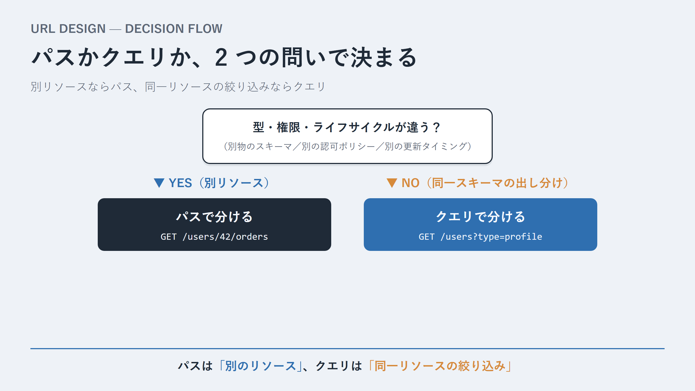
SUMMARY
急いでいる人はここで読み終えて大丈夫。「パス＝別リソース／クエリ＝絞り込み」。この一行さえ持ち帰れば、実務の URL 設計はほぼ迷わなくなります。以降は「なぜそう言えるのか」を、API の基礎から REST まで地続きで掘り下げます。気になった節だけ拾い読みで OK。API（Application Programming Interface）は直訳すると「アプリケーション同士をつなぐ接点」ですが、実務的には「呼び出す側と呼び出される側のあいだの契約（contract）」と捉えるのが一番しっくりきます。
レストランの比喩で考えると腑に落ちます。
「中身を知らなくても、決められた入力に対して決められた出力が返る」という性質を抽象化（abstraction）と呼びます。API の本質はこの抽象化にある。そしてこの抽象化が、ソフトウェア開発に 2 つの巨大な恩恵をもたらします。
つまり API とは、「変わってもいい部分」と「変えてはいけない部分」のあいだに引く境界線です。この境界線をどこに引くか、どんな形にするか。それが「API 設計」という営みのすべてだと言ってもいい。
| 種類 | 例 | 通信相手 | 失敗するか |
|---|---|---|---|
| ライブラリ API | Array.prototype.map() | 同一プロセス内（メモリ上） | ほぼしない |
| OS API（システムコール） | open(), read() | カーネル | ときどき |
| Web API | GET /users | ネットワーク越しのサーバー | 頻繁に |
この記事の主題は Web API、つまりネットワーク越しに HTTP で叩く API です。Web API は、ネットワークを挟むことで「失敗」が日常になる。この一点、遅延がある・失敗する・相手が見えないという事実こそが、Web API 設計のあらゆる難しさの源泉になります。あとで出てくる冪等性・ステータスコード・リトライといった概念は、すべてこの「ネットワークは信頼できない」という前提から生まれています。
REST を理解するには、その土台である HTTP を避けて通れません。REST は HTTP の上に成り立つスタイルだからです。ここを丁寧に押さえると、REST の設計判断がすべて「HTTP の素直な使い方」として腑に落ちます。
HTTP 通信は、クライアントがリクエストを送り、サーバーがレスポンスを返す、というシンプルな往復で成り立ちます。
GET /api/v1/users/42 HTTP/1.1
Host: example.com
Authorization: Bearer eyJhbGc...
Accept: application/jsonHTTP/1.1 200 OK
Content-Type: application/json
Cache-Control: max-age=60
{ "id": 42, "name": "Ishizaka" }リクエストとレスポンスが、ほぼ同じ「メソッド/ステータス + ヘッダー + ボディ」という構造をしていることに注目してください。HTTP はこの単純な型の繰り返しでできています。
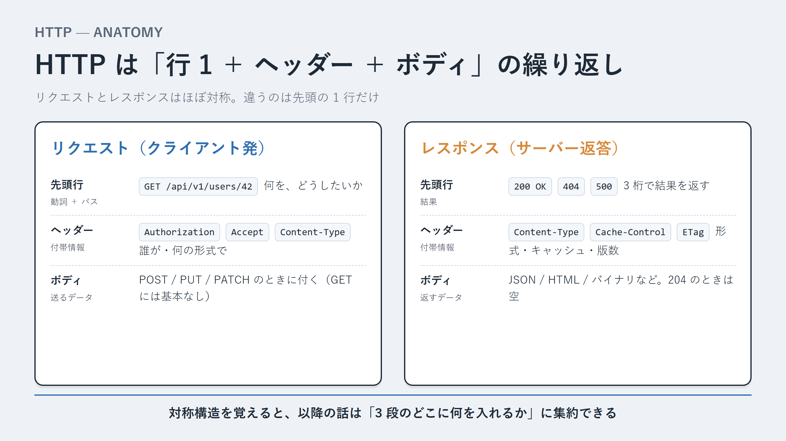
| メソッド | 意味 | 安全 | 冪等 | ボディ |
|---|---|---|---|---|
GET | 取得する | ◯ | ◯ | なし |
HEAD | ヘッダーだけ取得 | ◯ | ◯ | なし |
POST | 新規作成／処理を実行 | × | × | あり |
PUT | 全体を置き換える | × | ◯ | あり |
PATCH | 一部を更新する | × | △ | あり |
DELETE | 削除する | × | ◯ | 任意 |
OPTIONS | 利用可能なメソッドを問い合わせ | ◯ | ◯ | なし |
そのメソッドがサーバーの状態を変更しないことを「安全」と言います。GET は何度叩いてもデータが変わりません。だからクローラーは安心して投げられるし、ブラウザはプリフェッチできるし、CDN は気軽にキャッシュできる。
絶対にやってはいけない例
GET /users/42/delete ← GETなのに削除しているGET は安全」は単なるお行儀ではなく、エコシステム全体が依存している約束です。
同じリクエストを何回送っても、サーバーの最終状態が変わらないことを「冪等」と言います。
DELETE /users/42 を 1 回送る → 42 が消えるDELETE /users/42 をもう 2 回送る → すでに消えているので、最終状態は「42 が消えた状態」のまま何回送っても結果は同じ。だからネットワークが不安定でリトライしても安全です。一方 POST /users は冪等ではない。レスポンスが返ってこないからリトライ → ユーザーが二重作成、という事故が起きます。
TIP
POST を冪等にしたいときの定石が Idempotency-Key ヘッダーです。クライアントがユニークなキーを発行して送り、サーバーは「このキーは処理済み」と覚えておく。Stripe の決済 API などがこの方式。第5部で詳しく扱います。
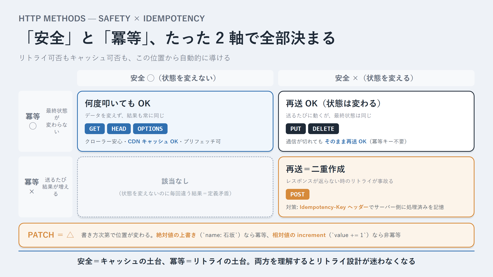
| レンジ | 意味 | 代表例 |
|---|---|---|
1xx | 情報（処理中） | 100 Continue |
2xx | 成功 | 200 201 204 |
3xx | リダイレクト | 301 304 |
4xx | クライアント側のエラー | 400 401 403 404 409 422 429 |
5xx | サーバー側のエラー | 500 502 503 |
CAUTION 現場で頻発する 3 つの混同
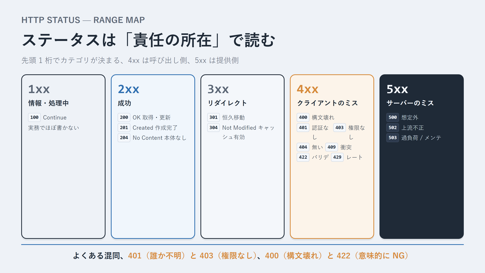
| ヘッダー | 向き | 役割 |
|---|---|---|
Content-Type | 両方 | ボディの形式 |
Accept | リクエスト | クライアントが望む形式 |
Authorization | リクエスト | 認証情報 |
Cache-Control | 両方 | キャッシュの可否・有効期間 |
ETag | レスポンス | リソースのバージョン識別子 |
Location | レスポンス | 作成された／移動先のリソース URL |
Retry-After | レスポンス | 再試行までの推奨待機時間 |
多くの人が「REST ＝ JSON を返す HTTP API」くらいの理解で止まっていますが、REST はもっと明確に定義されたアーキテクチャスタイルです。Roy Fielding が 2000 年に博士論文で提唱しました。重要なのは、REST が机上の理想として作られたのではなく、「すでに大成功していた Web」を後追いで理論化したものだということ。
UI とデータストレージの関心を分離する。それぞれを独立して進化させられる。
サーバーはリクエスト間でクライアントの状態を保持しない。各リクエストは、それ単体で処理に必要な情報をすべて含む。これが水平スケールの前提です。
レスポンスは「キャッシュしていいか／どれくらい有効か」を明示する。GET が安全だからこそ、ブラウザや CDN が安心して結果を取っておけます。
リソースを URI で識別し、HTTP メソッドという共通の動詞で操作する。どの API も同じ「叩き方の文法」になる。
中間層（ロードバランサー・CDN・プロキシ・API ゲートウェイ）を自由に挿入・除去できる。
サーバーがクライアントに実行可能コードを送れる。6 つの中でこれだけは必須ではない。
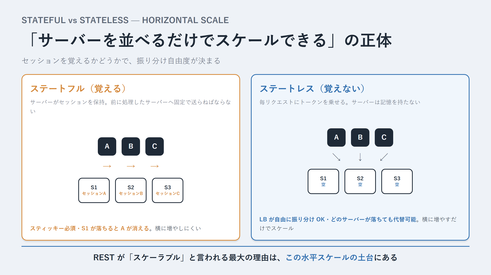
ステートレスはサーバーを横に並べるだけでスケールできる（水平スケール）ための前提です。REST が「スケーラブル」と言われる最大の理由がここにあります。冒頭の面接問題の「スケーラブル」というキーワードも、根っこはこの思想に繋がっています。
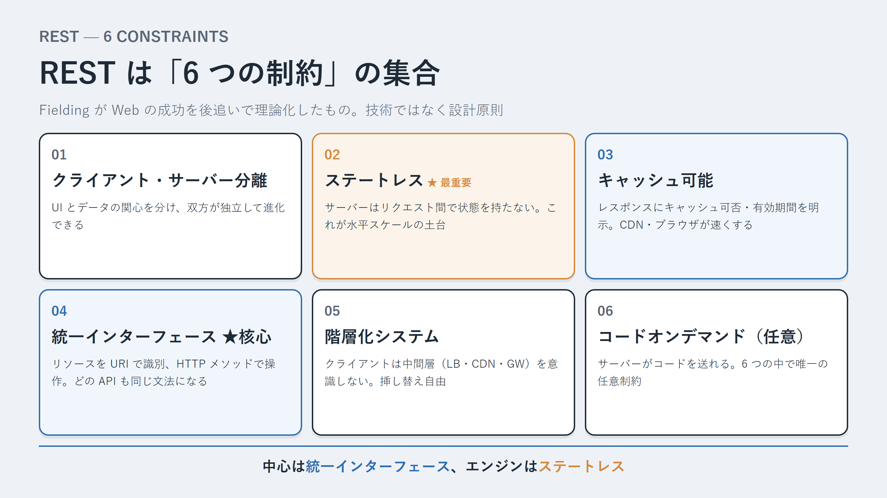
RPC 的な発想だと、API は「やりたい操作（動詞）」の一覧になります。
POST /getUser
POST /createUser
POST /deleteUser
POST /updateUserNameREST 的な発想だと、API は「リソース（名詞）」の一覧になり、操作は HTTP メソッドが担います。
GET /users/42 取得
POST /users 作成
PATCH /users/42 更新
DELETE /users/42 削除「何をするか」をエンドポイント名に書くのをやめ、「何に対して」をパスで、「どうするか」をメソッドで表す。動詞は HTTP がすでに用意してくれているので、自分で命名する必要がなく、一貫性が保たれます。
「ユーザーを ban する」「カートを精算する」のような、CRUD に素直に収まらない操作。代表的なアプローチは 3 つ。
# 1. 状態をリソースとして PATCH で更新する（最も REST らしい）
PATCH /users/42 { "status": "banned" }
# 2. サブリソースを「作成」する（イベントをリソースと捉える）
POST /users/42/bans
# 3. 動詞をパスに含める（純粋さは劣るが、明快で現実的）
POST /users/42/ban「自分の API はどれくらい REST なのか」を測るものさし。Level 0 から 3 までの 4 段階で、上に行くほど REST の理念に忠実になります。
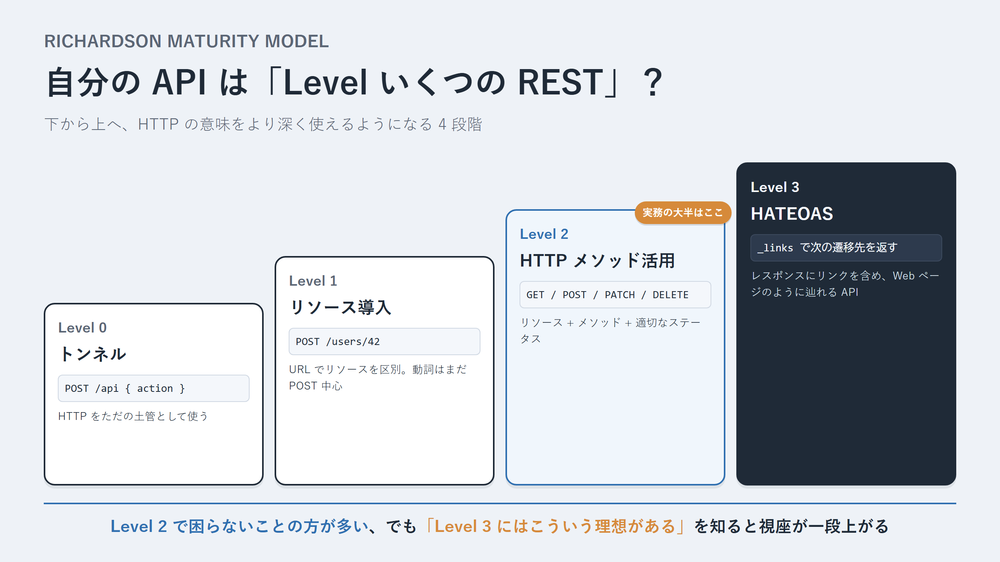
| 役割 | 例 | |
|---|---|---|
| パス（path） | 別のリソースを指し示す | /users/42/orders |
| クエリ（query） | 同一リソースの絞り込み・並び替え・ページング | /users?status=active&sort=created_at |
もう一つの覚え方: 「パスは "What"（何を）、クエリは "Which/How"（どれを・どう見せるか）」。
# コレクションと個別リソース
GET /users ユーザー一覧
GET /users/42 ID=42 のユーザー
POST /users ユーザーを作成
# ネストしたリソース
GET /users/42/orders ユーザー42の注文一覧
GET /users/42/orders/7 ユーザー42の注文7
# シングルトン
GET /users/42/profile 1人に1つ
GET /me ログイン中の自分
# 絞り込み・並び替え・ページング（すべてクエリ）
GET /users?role=admin&status=active
GET /users?sort=-created_at
GET /users?page=2&limit=20ネストは便利ですが深くしすぎないのがコツ。3 階層以上ネストすると URL が硬直化します。深い関係はネストせず、/order-items/3 のようにトップレベルで持って ID で繋ぐほうが柔軟。
問うべきは「profile と orders と settings は、別リソースか、それとも同一リソースの絞り込みか」。答えは前提によって割れます。
それぞれが別のスキーマ・別の権限・別のページネーションを持つ "別物" だとすると、B のように ?type= で 1 エンドポイントに束ねたとき以下が芋づる式に発生します。
Profile | Order | Settings のユニオンswitch (type) の巨大な分岐orders だけ切り出せないprofile / orders / settings が実は同じスキーマを持つ汎用的なドキュメントで、type が出し分けの条件でしかないなら逆転します。
?type=profile&fields=...&page=...&sort=...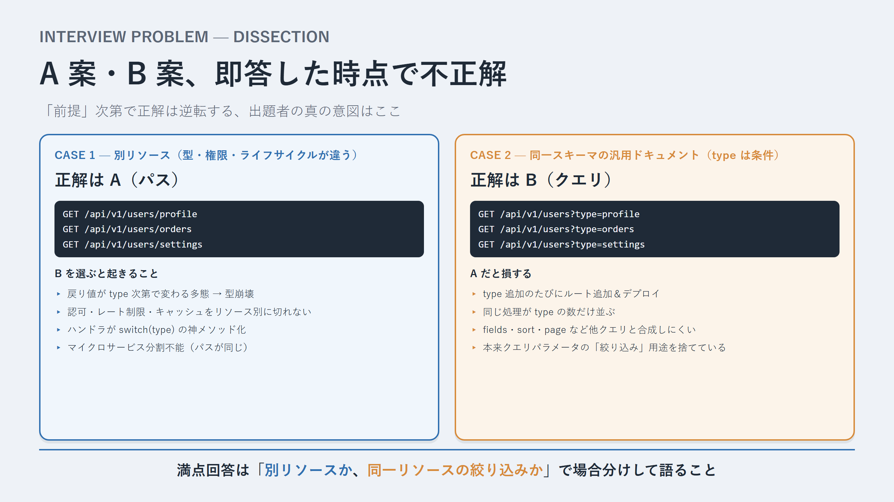
異なるリソースなら別リソースなのでパスで分ける A、同一スキーマの可変ドキュメントで type が単なる出し分けならクエリで合成できる B。判断基準は一貫して「別リソースか、同一リソースの絞り込みか」。
これが、出題者の意図（おそらく「短絡的に B を選ぶ人をふるい落とす罠」）を完全に見抜いた回答です。API 設計で問われているのは「答えの暗記」ではなく「判断基準を持っているか」。
補足
ちなみに A 案も完璧ではない。特定ユーザーを指すなら本来GET /users/{id}/profile のように ID を含めるべき。/users/profile だと「誰の profile か」が曖昧（暗黙に「ログイン中の自分」を指すなら /me/profile のほうが明示的で安全）。
?type=__proto__ のような攻撃やタイポを弾く）{ "kind": "profile", ... }）にする400 Bad Request を返す# 1. パスに含める（最も一般的・推奨）
GET /api/v1/users
# 2. ヘッダーで指定する
GET /api/users
Accept: application/vnd.myapp.v1+json
# 3. クエリで指定する（手軽だが推奨度は低い）
GET /api/users?version=1実務ではパス方式が圧倒的に多い。URL を見ただけでバージョンがわかり、ルーティングもキャッシュも素直になります。フィールドの削除・リネーム・意味変更・必須化といった破壊的変更のときだけ v2 を切る。
| 方式 | 例 | 深いページ | 追加でズレ | 任意ジャンプ |
|---|---|---|---|---|
| オフセット | ?limit=20&offset=40 | 遅い | ズレる | できる |
| カーソル | ?limit=20&cursor=eyJpZ... | 速い | ズレにくい | 不可 |
SNS のタイムラインや無限スクロール、大規模データではカーソル方式が選ばれます。管理画面の「全 N ページ・任意ジャンプ」が要るならオフセット、と使い分ける。
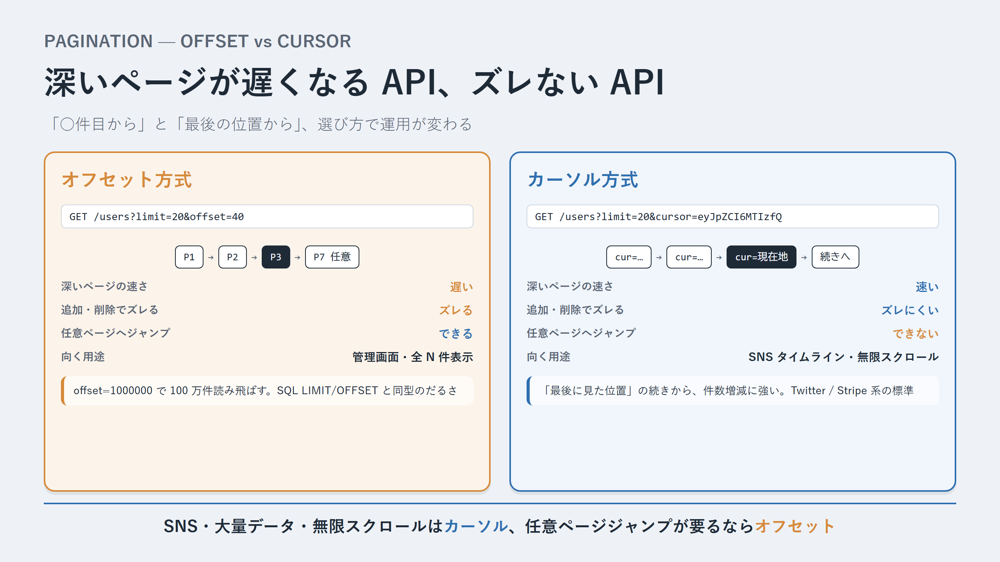
GET /users?status=active&role=admin # 複数条件（AND）
GET /users?sort=-created_at,name # 降順は - を前置
GET /users?fields=id,name # 必要なフィールドだけ
GET /users?created_after=2026-01-01 # 範囲指定
GET /users?q=ishizaka # 全文検索厳密な標準は無いので、自分の API 内で一貫した規約を決めるのが大事。
{
"error": {
"code": "VALIDATION_ERROR",
"message": "Validation failed for 1 field",
"details": [
{ "field": "email", "issue": "invalid_format" }
]
}
}message の文字列でクライアントが分岐する設計は厳禁STANDARD
エラーフォーマットには RFC 9457（Problem Details for HTTP APIs） という標準もあります。迷ったらこれに寄せると車輪の再発明を避けられる。401403| 方式 | 仕組み | 向くケース |
|---|---|---|
| API キー | 固定の文字列を送る | サーバー間連携、社内ツール |
| Bearer トークン（JWT 等） | 署名付きトークン | ユーザー認証全般 |
| OAuth 2.0 | 第三者にアクセス権を委譲 | 「Google でログイン」等の連携 |
JWT はステートレス制約と相性が良い。サーバーが状態を持たなくても、トークン自体に「誰か」が入っており署名で本物だと検証できる。これがステートレスの具体的な恩恵です。
JWT の注意点
ペイロードは暗号化ではなくただの Base64なので中身は丸見え。機密情報は入れない。また、サーバーが状態を持たない裏返しとして発行済みトークンの即時無効化（即時 BAN）が難しい。有効期限を短くしてリフレッシュトークンと組み合わせる設計が定番。GET /users/42 するETag: "abc123" を返すIf-None-Match: "abc123" を付けて問い合わせる304 Not Modified だけ返すHTTP/1.1 429 Too Many Requests
Retry-After: 30
X-RateLimit-Limit: 100
X-RateLimit-Remaining: 0
X-RateLimit-Reset: 1719500000クライアント側は 429 を受けたら、Retry-After 秒待って指数バックオフでリトライ、というのが行儀の良い実装です。
POST /api/v1/payments HTTP/1.1
Idempotency-Key: 9f8b7c6d-1234-...
Content-Type: application/json
{ "amount": 5000, "currency": "JPY" }クライアントがユニークなキーを送り、サーバーは処理前に「このキーは処理済みか」を確認。同じキーで再送が来たら新規実行せず保存済みの結果を返す。決済のような失敗が許されない POST では事実上必須のパターンです。
HTTP/1.1 200 OK
Access-Control-Allow-Origin: https://app.example.com
Access-Control-Allow-Methods: GET, POST, PATCH, DELETECORS はサーバー側の設定で解決するもので、フロント側で小細工するものではない、と覚えておくと迷いません。
GET /users/42/delete）: 安全性の破壊。クローラーやプリフェッチで事故る/getUserList, /doUpdate）: リソース指向の放棄。Level 0〜1 に逆戻りsuccess: false で失敗を表す: HTTP の意味を捨てている/a/1/b/2/c/3/d/4）: 硬直化。関連は ID で繋ぐ/user/42 と /orders）: 一貫性がない。複数形で統一オーバーフェッチ / アンダーフェッチ: GET /users/42 は固定の形を返す。「名前だけ欲しい」のに全部返ってくる（オーバー）、「ユーザーと注文と商品」を欲しいのに何度も叩く羽目になる（アンダー = N+1 問題）。
エンドポイントの爆発: 画面ごとに最適なデータ形が違うと、/users/42/dashboard-summary のような画面専用エンドポイントが増殖しがちになります。
| 方式 | 強み | 弱み | 向くケース |
|---|---|---|---|
| GraphQL | クライアントが必要な形を指定。オーバー/アンダーフェッチ解消 | HTTP キャッシュが効きにくい、複雑性 | 多様なクライアント、複雑な画面 |
| gRPC | バイナリで高速、型が厳格、双方向ストリーム | ブラウザから直接叩きにくい、可読性低 | マイクロサービス間、低レイテンシ要求 |
| tRPC | TS で型を端から端まで共有、コード生成不要 | TS エコシステムに閉じる | TS で完結するフルスタック |
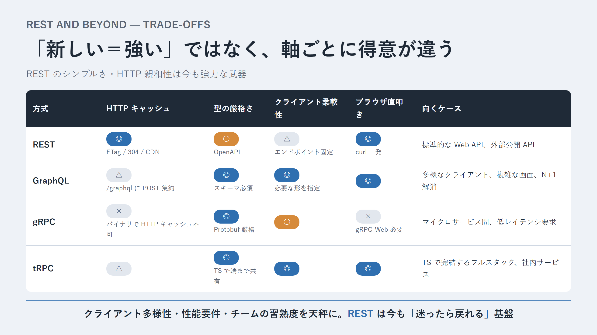
誤解してはいけないのは、これらは「REST の上位互換」ではないこと。GraphQL は柔軟だが URL ベースの HTTP キャッシュが効きにくい。gRPC は速いがブラウザから直接は叩けず curl で気軽に試せない。REST のシンプルさ・HTTP インフラとの親和性・ツールの豊富さは、依然として強力な武器です。「適材適所」であって、新しいものが常に正解ではない。この判断の構図は、結局のところ冒頭の面接問題（前提次第で正解が変わる）とまったく同じです。
冒頭の面接問題に即答で「B です」と答えていた自分は、半分正解で半分不正解だった。前提を場合分けして語れて初めて満点になる。この「前提を疑い、条件で場合分けして語る」感覚こそ、API 設計だけでなく、技術選定のあらゆる場面で効いてきます。